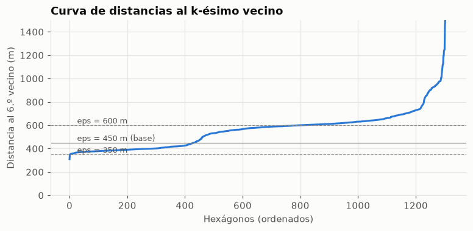
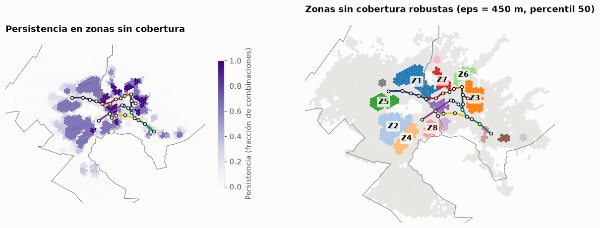
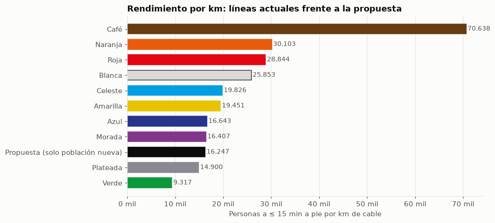

05 · Optimización: ¿dónde va una nueva línea de teleférico?
Pregunta: ¿dónde ubicar k nuevas estaciones para cubrir a la mayor cantidad de población hoy a más de 15 minutos a pie, qué línea las conecta con la red y cuánto rinde por km de cable?
Método (teleferico.optimize; corre en el pipeline con --pasos optimizacion): 1. Demanda: hexágonos H3 r9 con su población no cubierta (a > 15 min con pendiente, notebook 03). 2. Zonas sin cobertura (DBSCAN) sobre los hexágonos densos no cubiertos, con la población como sample_weight. Solo se reportan las zonas que persisten en la mayoría de 9 combinaciones de parámetros. 3. Candidatos: centros de hexágonos en las zonas sin cobertura y hasta 2 anillos alrededor, con pendiente del terreno ≤ 30 %. 4. Tiempo a pie demanda → candidato con el mismo grafo y la misma función de Tobler direccional. 5. MCLP (máxima cobertura) y p-mediana (mínimo tiempo total) con spopt, para k = 3…10. 6. Trazado: búsqueda en haz de una línea que sale de una estación existente, con vanos de 700-2.500 m y giros ≤ 60° en las estaciones, que maximiza la población nueva por km de cable. 7. Impacto: cobertura recalculada por manzano y pasajeros/año estimados con el modelo del notebook 04.
Escenario guiado por datos, no diseño de ingeniería: no se evalúan derechos de vía, torres, costos ni factibilidad política (ver docs/plan.md §8).
2,780 hexágonos con población no cubierta · 1,227,666 personas · 16 bolsones robustos · 957 candidatos
1. Zonas sin cobertura (DBSCAN)
Calibración de eps
Distancia al 6.º vecino más cercano entre los hexágonos densos no cubiertos. En una grilla H3 r9 los centros vecinos están a ~350 m. El codo de la curva indica la escala a la que los hexágonos dejan de ser contiguos.
Ver código
kd = op.distancia_k_vecino(op.demanda_no_cubierta(acc))fig, ax = plt.subplots(figsize=(8, 3.4))ax.plot(np.arange(len(kd)), kd, color=viz.ACENTO)for e in op.GRILLA_EPS: ax.axhline(e, color=viz.TINTA_3, lw=0.8, ls="--"if e != op.EPS_M else"-") ax.text(len(kd) *0.02, e +15, f"eps = {e} m"+ (" (base)"if e == op.EPS_M else""), fontsize=8.5, color=viz.TINTA_2)ax.set_ylim(0, 1500)ax.set_xlabel("Hexágonos (ordenados)")ax.set_ylabel("Distancia al 6.º vecino (m)")ax.set_title("Curva de distancias al k-ésimo vecino")viz.guardar(fig, "05_k_distancia")plt.show()print("Percentiles de la distancia al 6.º vecino (m):", np.percentile(kd, [25, 50, 75, 90]).round(0))

Percentiles de la distancia al 6.º vecino (m): [409. 580. 626. 708.]
Robustez: número de zonas sin cobertura y población según los parámetros
Ver código
dem_full = op.demanda_no_cubierta(acc)filas = []for e in op.GRILLA_EPS:for pct in op.GRILLA_PCT: b = op.dbscan(dem_full, e, op.POB_NUCLEO, pct) filas.append({"eps_m": e, "percentil_densidad": pct, "bolsones": int(b.max() +1),"personas_en_bolsones": dem_full.loc[b >=0, "personas"].sum()})rob = pd.DataFrame(filas)rob.pivot(index="eps_m", columns="percentil_densidad", values="personas_en_bolsones").style.format(viz.fmt_int)
percentil_densidad
40
50
60
eps_m
350
143.304
140.620
138.941
450
574.435
561.380
529.389
600
811.896
737.253
652.191
Ver código
fig, axs = plt.subplots(1, 2, figsize=(13, 6))ax = axs[0]hx_todos.plot(ax=ax, color=viz.GRILLA, linewidth=0)dem.plot(ax=ax, column="persistencia", cmap="Purples", vmin=0, vmax=1, linewidth=0, legend=True, legend_kwds={"shrink": 0.5, "label": "Persistencia (fracción de combinaciones)"})viz.mapa_base(ax, mun, lineas, est, bounds)ax.set_title("Persistencia en zonas sin cobertura")ax = axs[1]hx_todos.plot(ax=ax, color=viz.GRILLA, linewidth=0)b = dem[dem["bolson"] >=0]paleta = plt.get_cmap("tab20")orden = {k: i for i, k inenumerate(bol["bolson"])}for k, g in b.groupby("bolson"): g.plot(ax=ax, color=paleta(orden[k] %20), linewidth=0)viz.mapa_base(ax, mun, lineas, est, bounds)for i, r in bol.head(8).iterrows(): p = gpd.GeoSeries(gpd.points_from_xy([r["lon"]], [r["lat"]]), crs=CRS_WGS84).to_crs(CRS_METRIC).iat[0] ax.annotate(f"Z{i +1}", (p.x, p.y), fontsize=10, fontweight="bold", color=viz.TINTA, ha="center", va="center", bbox={"boxstyle": "round,pad=0.2", "fc": "white", "ec": "none", "alpha": 0.8})ax.set_title(f"Zonas sin cobertura robustas (eps = {op.EPS_M} m, percentil {op.PCT_DENSIDAD})")viz.guardar(fig, "05_bolsones")plt.show()tabla_b = bol.assign(id=[f"Z{i +1}"for i inrange(len(bol))]).set_index("id")[ ["municipio", "zona", "personas_no_cubiertas", "area_km2", "densidad_no_cubierta_hab_km2","t_actual_min", "iv", "persistencia"]]tabla_b.style.format({"personas_no_cubiertas": viz.fmt_int, "area_km2": "{:.1f}","densidad_no_cubierta_hab_km2": viz.fmt_int, "t_actual_min": "{:.0f}","iv": "{:.2f}", "persistencia": "{:.2f}"})

municipio
zona
personas_no_cubiertas
area_km2
densidad_no_cubierta_hab_km2
t_actual_min
iv
persistencia
id
Z1
El Alto
El Alto
102.723
10.8
9.468
26
0.57
0.73
Z2
El Alto
El Alto
96.560
11.0
8.815
52
0.48
0.66
Z3
La Paz
San Antonio
68.560
6.4
10.670
29
0.42
0.83
Z4
El Alto
El Alto
51.093
5.8
8.819
42
0.46
0.71
Z5
El Alto
El Alto
46.940
5.3
8.913
27
0.52
0.66
Z6
La Paz
Periférica
41.363
3.7
11.220
29
0.48
0.85
Z7
La Paz
Periférica
33.431
2.9
11.335
31
0.44
0.87
Z8
El Alto
El Alto
33.131
3.4
9.829
24
0.45
0.66
Z9
La Paz
Cotahuma
31.261
2.5
12.366
19
0.51
0.94
Z10
La Paz
Cotahuma
13.057
1.4
9.535
28
0.51
0.78
Z11
La Paz
Sur
9.908
1.2
8.551
25
0.28
0.63
Z12
La Paz
Sur
8.070
0.6
12.769
23
0.33
0.63
Z13
La Paz
Sur
6.743
0.6
10.669
22
0.42
0.52
Z14
La Paz
Max Paredes
6.342
0.7
8.601
60
0.49
0.55
Z15
El Alto
El Alto
6.135
0.7
8.321
22
0.58
0.67
Z16
La Paz
Sur
6.063
0.7
8.223
56
0.43
0.67
Lectura: - La distancia al 6.º vecino tiene mediana de ~580 m. Con eps = 350 m casi nada se agrupa (140 mil personas); con 450-600 m aparecen las zonas sin cobertura (530-810 mil). Se elige 450 m: une hexágonos contiguos sin fusionar zonas separadas por quebradas o por la autopista. - Con eps = 450 m, el resultado es estable frente al umbral de densidad (±4 % de población entre los percentiles 40 y 60). Las 16 zonas sin cobertura reportadas persisten en al menos la mitad de las 9 combinaciones; las de las laderas de La Paz son los más estables (persistencia de 0,8-0,9). - Hipótesis 2, confirmada: las mayores zonas sin cobertura están en El Alto: Z1 al norte de 16 de Julio (103 mil personas no cubiertas), Z2 al sur (97 mil, a 52 min de una estación hoy), Z4 y Z5. En La Paz, Z3 en San Antonio (69 mil) y las laderas de Periférica (Z6 y Z7) y Cotahuma (Z9). Las zonas sin cobertura tienen densidades de 8-13 mil hab/km², y los 10 mayores, un índice de vulnerabilidad medio de 0,42-0,57.
2. MCLP: ¿cuánta población se cubre con k estaciones nuevas?
Las estaciones del MCLP son libres: pueden quedar dispersas por toda la ciudad. Es la cota superior de lo que lograrían k estaciones, sin la restricción de formar una línea.
Lectura: - Rendimientos decrecientes suaves: las primeras 3 estaciones cubren 90 mil personas (30 mil c/u); la décima agrega 20 mil. Con 10 estaciones libres se cubrirían 263 mil personas (21 % de la población hoy no cubierta). - Sin pendiente, la curva sube apenas un 4-9 %: las zonas sin cobertura más grandes están en El Alto, que es plano. Con 10 minutos de umbral, la cobertura cae a la mitad (47-54 %). - Con k = 6, el MCLP reparte estaciones entre el norte (Z1), el oeste (Z5) y el sur de El Alto (Z2/Z4), más una cerca de la línea Morada. La p-mediana, restringida a las zonas sin cobertura, coincide en El Alto y suma San Antonio (Z3). Baja el tiempo medio de caminata en las zonas sin cobertura de 33 a 20,5 min. - Las estaciones libres del MCLP quedan dispersas: no forman una línea. Por eso el trazado se resuelve aparte, y el MCLP queda como cota superior.
3. Trazado de la línea
La búsqueda en haz arma, para cada número de estaciones nuevas, la línea con más población nueva por km. El número de estaciones se elige con una regla de rendimiento marginal: se agregan estaciones mientras cada una cubra al menos tantas personas por km como la red actual (13.167 personas a ≤ 15 min por km de cable).
Lectura: - La mejor línea sale de 16 de Julio (transbordo con las líneas Roja, Azul y Plateada) hacia el noroeste, a lo largo de la zona sin cobertura Z1 (norte de El Alto). Tiene 7 estaciones nuevas en 5,9 km, con vanos de 0,7-1,2 km, parecidos a los de la línea Azul. - La regla marginal se detiene en 7: la 8.ª estación agregaría solo 7,4 mil personas por km, frente a las 13,2 mil de la red actual. - Cubre el ~50 % de lo que lograrían 7 estaciones libres (MCLP). Es el costo de exigir que las estaciones formen una línea continua conectada a la red. - La primera estación (N1) cae en el borde de la ladera de Max Paredes (La Paz) y cubre ~19 mil personas paceñas. Las otras 6 están en El Alto (77 mil personas). - La evaluación por manzano (95 mil personas nuevas) da algo menos que la estimación por hexágonos de la búsqueda (101 mil): dentro de cada hexágono no todos los manzanos quedan a ≤ 15 min.
Comparación con las líneas actuales: población a ≤ 15 min por km de cable
Para cada línea existente se cuenta la población a ≤ 15 min (con pendiente) de alguna de sus estaciones, dividida por su longitud. Para la propuesta se usa solo la población nueva, la que hoy no tiene acceso, un criterio más exigente.
Ver código
nod, a = ac.nodos(), ac.aristas_tiempo()T_est = ac.tiempos_por_estacion(a, nod, est, variantes=("pendiente",))mz = ac.manzanos_centroides()_, por_est = ac.acceso_manzanos(mz, nod, est, T_est)pers = mz["personas"].to_numpy()km_linea = lineas.groupby("linea")["longitud_m"].sum() /1000andenes = pd.read_parquet(PROCESSED /"red"/"andenes.parquet")filas = []for l, g in andenes.groupby("linea"): idx = est.index[est["slug"].isin(g["slug"])] cub = (por_est["pendiente"][idx] <=15).any(axis=0) filas.append({"linea": l, "km": km_linea[l], "personas_15": pers[cub].sum()})comp_l = pd.DataFrame(filas)comp_l["personas_por_km"] = comp_l["personas_15"] / comp_l["km"]comp_l = pd.concat([comp_l, pd.DataFrame([{"linea": "Propuesta (solo población nueva)", "km": resumen["km_cable"],"personas_15": resumen["personas_nuevas_15"],"personas_por_km": resumen["personas_nuevas_por_km"]}])])comp_l = comp_l.sort_values("personas_por_km")fig, ax = plt.subplots(figsize=(9, 4.6))col = [viz.TINTA if l.startswith("Propuesta") else viz.COLOR_LINEA.get(l, viz.TINTA_3) for l in comp_l["linea"]]borde = [viz.BORDE_LINEA.get(l, c) for l, c inzip(comp_l["linea"], col)]ax.barh(comp_l["linea"], comp_l["personas_por_km"], color=col, edgecolor=borde, height=0.65)for i, v inenumerate(comp_l["personas_por_km"]): ax.text(v +300, i, viz.fmt_int(v), va="center", fontsize=9, color=viz.TINTA_2)ax.xaxis.set_major_formatter(mticker.FuncFormatter(viz.miles))ax.grid(axis="y", visible=False)ax.set_xlabel("Personas a ≤ 15 min a pie por km de cable")ax.set_title("Rendimiento por km: líneas actuales frente a la propuesta")viz.guardar(fig, "05_rendimiento_lineas")plt.show()comp_l.set_index("linea").style.format({"km": "{:.1f}", "personas_15": viz.fmt_int, "personas_por_km": viz.fmt_int})

km
personas_15
personas_por_km
linea
Verde
3.7
34.754
9.317
Plateada
2.8
41.177
14.900
Propuesta (solo población nueva)
5.9
95.276
16.247
Morada
4.4
72.106
16.407
Azul
5.0
82.630
16.643
Amarilla
3.8
72.961
19.451
Celeste
2.7
54.227
19.826
Blanca
2.9
74.829
25.853
Roja
2.4
68.836
28.844
Naranja
2.6
78.223
30.103
Café
0.7
52.908
70.638
Lectura: la propuesta cubre 16,2 mil personas nuevas por km, al nivel de la Azul (16,6 mil) y la Morada (16,4 mil), y por encima de la Plateada y la Verde, que cuentan toda su población y no solo la nueva. Las líneas cortas del centro (Café, Naranja, Roja) rinden más por km porque atraviesan las zonas más densas y ya consolidadas.
4. Impacto: cobertura y pasajeros estimados
Ver código
pas = op.pasajeros(nuevas)tot = pas[dm.PRINCIPAL]["total"]tot_ext = pas[dm.EXTENDIDO]["total"]alto = acc[acc["municipio"] =="El Alto"]pct_alto_antes = alto.loc[alto["t_pendiente_min"] <=15, "personas"].sum() / alto["personas"].sum() *100impacto = pd.Series({"Estaciones nuevas": resumen["n_estaciones"],"Km de cable": round(resumen["km_cable"], 1),"Personas nuevas a ≤ 15 min": viz.fmt_int(resumen["personas_nuevas_15"]),"Personas nuevas a ≤ 10 min": viz.fmt_int(resumen["personas_nuevas_10"]),"…de ellas, vulnerables (Q4-Q5)": viz.fmt_int(resumen["personas_nuevas_vulnerables_15"]),"Personas nuevas por km": viz.fmt_int(resumen["personas_nuevas_por_km"]),"Cobertura a ≤ 15 min, total": f"{resumen['pct_15_antes']:.1f} % → {resumen['pct_15_despues']:.1f} %","Cobertura a ≤ 15 min, El Alto": f"{pct_alto_antes:.1f} % → {resumen['pct_15_despues_el_alto']:.1f} %","Abordajes/año (modelo principal), media [IC 90 %]":f"{tot['media'] /1e6:.1f} M [{tot['p05'] /1e6:.1f}-{tot['p95'] /1e6:.1f} M]","Abordajes/año (modelo extendido), media [IC 90 %]":f"{tot_ext['media'] /1e6:.1f} M [{tot_ext['p05'] /1e6:.1f}-{tot_ext['p95'] /1e6:.1f} M]",})impacto.to_frame("valor")
valor
Estaciones nuevas
7
Km de cable
5.9
Personas nuevas a ≤ 15 min
95.276
Personas nuevas a ≤ 10 min
59.251
…de ellas, vulnerables (Q4-Q5)
59.687
Personas nuevas por km
16.247
Cobertura a ≤ 15 min, total
24.9 % → 30.8 %
Cobertura a ≤ 15 min, El Alto
12.9 % → 21.6 %
Abordajes/año (modelo principal), media [IC 90 %]
9.4 M [5.7-13.9 M]
Abordajes/año (modelo extendido), media [IC 90 %]
8.7 M [5.3-12.9 M]
Ver código
por_est = pd.DataFrame({i: v for i, v in pas[dm.EXTENDIDO]["por_estacion"].items()}).Tnuevas.drop(columns="geometry").set_index("id")[["pob_pendiente_10", "pob_pendiente_15"]].join( por_est.add_prefix("abordajes_")).style.format(viz.fmt_int)
pob_pendiente_10
pob_pendiente_15
abordajes_media
abordajes_p05
abordajes_p50
abordajes_p95
id
N1
10.437
21.951
1.231.127
288.426
1.082.780
2.721.386
N2
10.803
21.040
1.223.904
300.254
1.078.469
2.686.089
N3
12.435
25.903
1.266.145
308.899
1.120.719
2.752.067
N4
11.697
29.261
1.263.480
300.397
1.100.055
2.756.042
N5
10.099
24.308
1.275.001
299.595
1.105.086
2.821.769
N6
10.550
24.454
1.249.168
301.830
1.099.180
2.677.718
N7
8.962
22.413
1.216.842
292.738
1.067.002
2.584.181
Lectura: - 95 mil personas pasan a vivir a ≤ 15 min a pie de una estación (59 mil a ≤ 10 min). La cobertura total sube de 24,9 % a 30,8 % y la de El Alto, de 12,9 % a 21,6 %. - El 63 % de las personas nuevas cubiertas (60 mil) está en los quintiles más vulnerables (Q4-Q5): la línea también reduce la brecha de equidad del notebook 03. - Abordajes estimados: ~9 M/año (IC 90 %: 5-14 M), unos 1,2 M por estación. Es coherente con las estaciones internas de la línea Azul (0,8-2,7 M cada una). No incluye los abordajes adicionales en 16 de Julio (en la Azul ese andén suma 4,7 M), y una parte de los abordajes vendría de otras estaciones: no son todos viajeros nuevos.
5. Sensibilidad del trazado
¿La línea elegida cambia si se usa la caminata sin pendiente o el umbral de 10 minutos?
Ver código
w_ = dem_h["personas"].to_numpy()filas = []for nombre, T, u in (("Con pendiente, 15 min (base)", Ts["pendiente"], 15), ("Sin pendiente, 15 min", Ts["plana"], 15), ("Con pendiente, 10 min", Ts["pendiente"], 10)): L = op.trazar_linea(cand, T, w_, est, umbral=u) f = L.set_index("n_estaciones").loc[resumen["n_estaciones"]] comun =len(set(cand["h3"].iloc[list(f["secuencia"])]) &set(nuevas["h3"])) filas.append({"escenario": nombre, "origen": f["origen"], "km": f["km"], "personas": f["personas"],"estaciones en común con la base": f"{comun} de {resumen['n_estaciones']}"})pd.DataFrame(filas).set_index("escenario").style.format({"km": "{:.1f}", "personas": viz.fmt_int})
origen
km
personas
estaciones en común con la base
escenario
Con pendiente, 15 min (base)
16_de_julio
5.9
100.749
7 de 7
Sin pendiente, 15 min
16_de_julio
5.9
104.711
4 de 7
Con pendiente, 10 min
16_de_julio
6.0
63.013
0 de 7
Lectura: - El corredor es robusto: con caminata plana o con umbral de 10 min, la mejor línea también sale de 16 de Julio y recorre el norte de El Alto, con la misma longitud (5,9-6,0 km). - Lo que cambia es la ubicación exacta de las estaciones: sin pendiente coinciden 4 de 7 y con 10 min ninguna (se acercan más entre sí para cubrir radios más cortos). La ubicación fina debe definirse con estudios de terreno, no con este modelo.
6. Contraste con el proyecto anunciado: extensión de la Línea Café a Pampahasi
El único proyecto de ampliación con financiamiento aprobado (crédito del BID, Ley N° 1759) es la extensión de la Línea Café desde Las Villas hasta Pampahasi (~1,2 km), en el macrodistrito San Antonio. Se evalúa con el mismo método: una estación nueva en Pampahasi (punto de OSM, nodo 1740962925).
# ¿En qué bolsón cae Pampahasi y qué parte de él cubre?nuevos_pa = m_pa[(m_pa["t_despues"] <=15) &~(m_pa["t_antes"] <=15)]h_pa = h3.latlng_to_cell(-16.4997213, -68.1037712, 9)b_pa = dem_h.loc[dem_h["h3"] == h_pa, "bolson"]print("Hexágono de Pampahasi en bolsón:", int(b_pa.iat[0]) iflen(b_pa) else"no (sin población no cubierta)")print(f"Personas nuevas cubiertas por zona: {nuevos_pa.groupby('zona')['personas'].sum().round(0).to_dict()}")
Hexágono de Pampahasi en bolsón: 0
Personas nuevas cubiertas por zona: {'San Antonio': 18261}
Lectura: - La extensión anunciada apunta a una zona sin cobertura real: Pampahasi está dentro de Z3 (San Antonio), una de las zonas sin cobertura más grandes y persistentes de La Paz. - Con 1 estación y 1,2 km cubre ~18 mil personas nuevas (14,8 mil por km), algo menos que la propuesta (16,2 mil/km), y estaría por encima del promedio de la red (13,2 mil/km). - El modelo de demanda le asigna ~1,2 M de abordajes/año, pero con mucha incertidumbre: hoy Las Villas, la estación a la que se conecta, es una de las de menor demanda (0,35 M en 2025). - Las dos intervenciones son complementarias: Pampahasi atiende una ladera de La Paz; la línea propuesta, la zona sin cobertura más grande de El Alto.
7. Conclusiones
#
Hallazgo
Implicación
1
H2 confirmada: 16 zonas sin cobertura robustas con 561 mil personas no cubiertas. Los mayores están en El Alto (norte y sur de 16 de Julio) y en San Antonio (La Paz)
La expansión debe empezar por El Alto
2
MCLP: 3 estaciones libres cubren 90 mil personas y 10 cubren 263 mil. Los rendimientos decrecientes son suaves
Hay espacio para más de una intervención
3
Propuesta: línea de 7 estaciones y 5,9 km desde 16 de Julio hacia el norte de El Alto
Transbordo con Roja, Azul y Plateada en la estación de más demanda de la red
4
95 mil personas nuevas a ≤ 15 min (16,2 mil/km, al nivel de Azul y Morada). Cobertura de El Alto: 12,9 % → 21,6 %
El mejor rendimiento por km disponible con una línea continua
5
63 % de las personas nuevas cubiertas son vulnerables (Q4-Q5)
Argumento de equidad además de demanda
6
~9 M de abordajes/año (IC 90 %: 5-14 M), sin contar los transbordos en 16 de Julio
Orden de magnitud similar al de la línea Azul (11,5 M en 2025)
7
El corredor se repite con caminata plana y con umbral de 10 min; la ubicación exacta de las estaciones no
Recomendar el corredor, no puntos exactos
8
La extensión anunciada a Pampahasi cae en la zona sin cobertura Z3 y rinde 14,8 mil personas/km
Validación independiente: el método identifica la misma prioridad que la planificación oficial en La Paz
Limitaciones: escenario guiado por datos, sin costos, derechos de vía ni factibilidad de torres. La caminata ignora el minibús, que es el principal alimentador. El modelo de demanda tiene n = 26 e intervalos amplios. Los abordajes de la nueva línea no son todos viajeros nuevos.